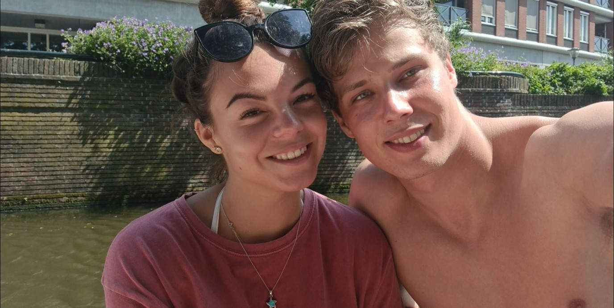
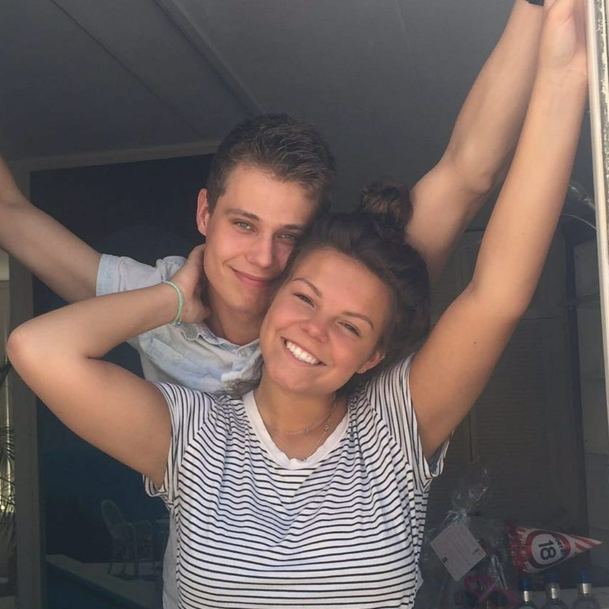
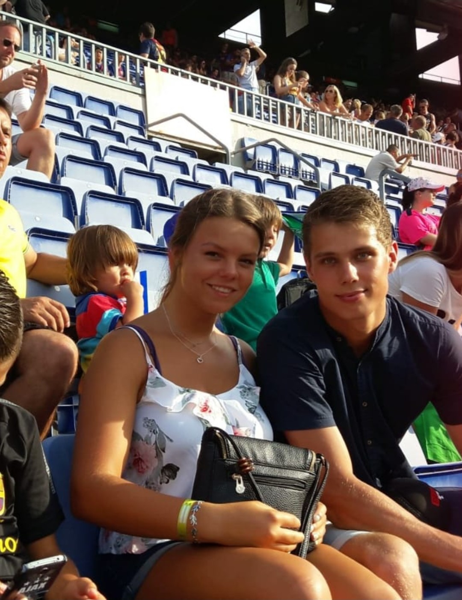

Vrijdag 17 september
Benvenuti
19.00 – ongeveer 21.00 uur
Pizzadiner
We proosten samen op het weekend met antipasti, verschillende pizza’s, dessert, water en huiswijn.
Lieve familie & vrienden
Over drie dagen begint ons avontuur. We kunnen niet wachten om dit bijzondere weekend samen met jullie te beleven.
Op deze website vinden jullie alle praktische informatie over het programma, de reis en het verblijf.
We tellen af
A weekend in Tuscany
Vrijdag 17 september
Pizzadiner
We proosten samen op het weekend met antipasti, verschillende pizza’s, dessert, water en huiswijn.
Zaterdag 18 september
CeremonieBij de kapel van Villa Grassina
17.30 – 19.30Aperitief bij de villa met antipasti, prosecco, Aperol Spritz, wijn en fris
Vanaf 19.30Driegangendiner, Italiaanse millefoglie-bruidstaart en mousserende wijn
22.00 – 01.00Open bar en feest
Zondag 19 september
Ontbijt & afscheid
We genieten nog één keer samen van een rustig ontbijt, praten na en nemen daarna afscheid.
Onze locatie
Een sfeervolle villa tussen de Toscaanse heuvels, olijfbomen en cipressen. De tuinen, kapel en het restaurant zijn exclusief voor ons trouwfeest beschikbaar.
Via di Grassina 102
50060 Pelago, Firenze
Samen onderweg



Op weg naar Italië
De reis naar Italië regelen jullie zelf. Voor gasten die naar Pisa vliegen, organiseren wij op vaste momenten een transfer naar Villa Grassina.
Goed om te weten
Feestelijk, zomers en Italiaans chic.
Geef allergieën en dieetwensen uiterlijk vóór 3 september 2027 door.
Er zijn appartementen voor maximaal 60 gasten gereserveerd.
We vieren het trouwweekend graag met volwassenen.
Het verblijf is gereserveerd voor twee nachten. Verdere informatie over ontbijt en de kamerverdeling volgt later.
Eigen drank mag in de koelkast van het appartement worden bewaard en daar worden gedronken. In de gemeenschappelijke ruimten geldt de bar van Villa Grassina.
Laat ons uiterlijk vóór 3 september 2027 weten of je erbij bent en geef dan ook eventuele dieetwensen door.
Kom je ook?
Laat ons weten of je erbij bent. Na verzenden opent een e-mail aan ons allebei.